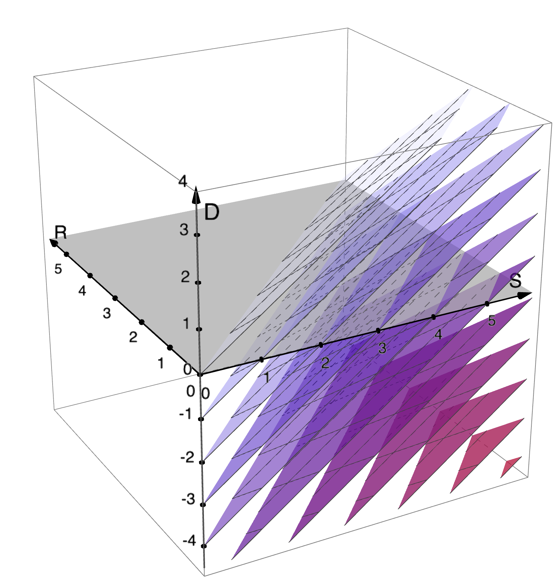

\global\def\I#1{\operatorname{I}(#1)} \global\def\H#1{\operatorname{H}(#1)} \global\def\surp#1{\operatorname{surp}(#1)} \global\def\DIV#1#2#3#4{\operatorname{D_{#1}}(#3#2#4)} \global\def\KL#1#2{\DIV{KL}\|{#1}{#2}} \global\def\E{\operatorname*{\mathbb{E}}} \global\def\dee{\mathop{\mathrm{d}\!}} \global\def\var#1{\operatorname{\mathbb{V}}(#1)} \global\def\Var#1#2{\operatorname{\mathbb{V}}\!\!{}_{#1}(#2)} \global\def\indep{\bot\!\!\!\bot} \global\def\uu{\breve u}
% Moved below, for vscode
Difficulty and surprisal
% included just for quarto VSCode to display nicely \global\def\uu{\breve u} \global\def\R{\operatorname{R}_{\pZu}(\uu)} \global\def\Rs#1{\operatorname{R}_{#1}(\uu)} \global\def\cPOST{\color{0A00A0}} \global\def\cPRIO{\color{008008}} \global\def\cPROP{\color{A00A00}} \global\def\pZu{{\cPOST p_{Z\mid\uu}}} \global\def\pzu{{\cPOST p(z\mid \uu)}} \global\def\qZu{{\cPROP q_{Z; \uu}}} \global\def\qzu{{\cPROP q(z; \uu)}} \global\def\Dq{D_{\pZu}^{\qZu \leftarrow p_Z}(\uu)} \global\def\surp#1{\operatorname{surp}(#1)} \global\def\priorZ{{\cPRIO p_{Z\mid \mathbf\uu_{< i}}}} \global\def\posteriorZ{{\cPOST p_{Z\mid \mathbf\uu_{\le i}}}} \global\def\proposalZ{{\cPROP q_{Z; \mathbf\uu_{\le i}}}} \global\def\priorz{{\cPRIO p(z\mid \mathbf\uu_{< i})}} \global\def\posteriorz{{\cPOST p(z\mid \mathbf\uu_{\le i})}} \global\def\proposalz{{\cPROP q(z; \mathbf\uu_{\le i})}} \global\def\Dqi{D_{ {\cPOST p} }^{{\cPROP q} \leftarrow {\cPRIO p} }(\uu)} \global\def\Ri{\Rs{{\cPOST p}}} % \global\def\posteriorU{{{p_\mathrm{LM}}(\mathbf U_{>i}\mid \mathbf\uu_{\le i})}} \global\def\proposalU{{{q_\mathrm{LM}}(\mathbf U_{>i}\mid \mathbf\uu_{\le i})}} \global\def\posterioru{{{p_\mathrm{LM}}(\mathbf u_{>i}\mid \mathbf\uu_{\le i})}} \global\def\proposalu{{{q_\mathrm{LM}}(\mathbf u_{>i}\mid \mathbf\uu_{\le i})}} \global\def\prioru{p_\mathrm{LM}(\mathbf u_{>i}\mid \mathbf\uu_{< i})} % \global\def\posteriorN{{{p_\mathrm{LM}}(\mathbf U_{i+1}\mid \mathbf\uu_{\le i})}} \global\def\posteriorn{{{p_\mathrm{LM}}(u_{i+1}\mid \mathbf\uu_{\le i})}} \global\def\dpdq{\frac{\dee p}{\dee q}}
Difficulty as KL
Say we want to approximate some target distribution p using samples from some other distribution q.
If we use samples from q to approximate p, using importance sampling, the number of samples necessary and sufficient for for an accurate approximation is exponential in the relative entropy:
\#\text{samples}_{\mathrm{IS}(p\leftarrow q)} \approx e^{\KL p q}
For proof, see Chatterjee & Diaconis (2018), who show that taking e^{\KL p q} samples from q is a necessary and sufficient condition for the absolute value of the error to be close to zero with high probability.
Technically, this result only obtains when the log density of p wrt q is likely to be concentrated around its expected value.
That is, that \log \dpdq(Z) (where Z\sim p) is concentrated around \E_p{\log \dpdq(Z)} = \KL p q. Or equivalently, that \dpdq(Z')\log \dpdq(Z') (where Z'\sim q) is concentrated around \E_q{\dpdq(Z')\log \dpdq(Z')} = \KL p q. Roughly, this requirement is that the expected variance in importance weights is small.
More precisely, their result says that in order to bound the L^1-error of the estimate close to zero with high probability, a sample size of
- e^{\KL p q + \mathcal{O}(s)} is sufficient
- e^{\KL p q - \mathcal{O}(s)} is necessary
where s is the typical order of fluctuations in \log \dpdq(Z) around its expected value, \KL p q.
So, for a sampling-based mechanism we can define the update cost as this exponentiatied relative entropy:
\mathrm{cost} \coloneqq e^{\KL p q}
also note, many empirical studies of human reading time as a function of surprisal log transform the response variable, which in fact implies an exponential relationship like this. this is acknowledged, if only rarely (for example, in Oh et al., 2024)
The number of samples necessary for IS can also be related to other divergences (other than KL). See Agapiou et al. (2017) discuss the \chi^2-divergence, and also Sanz-Alonso (2018) (who also dicsuss Hellinger and TV).
- \DIV{\chi^2}\| p q = \E_q{((\dpdq)^2)}-1 = \E_p{(\dpdq)}-1
- \KL p q = \E_q{(\dpdq\log\dpdq)} =\E_p{(\log\dpdq)}
Note it’s clear by Jensen’s that e^{\mathrm{KL}}\le \mathrm{D}_{\chi^2} + 1.
The result discussed in Agapiou et al. (2017) is:
- They define
- unnormalized density g as \frac1{\E_q{g}}g(\cdot)\coloneqq\dpdq(\cdot), and
- denote with \rho the second moment of this RN-derivative: \rho\coloneqq \E_q(\dpdq^2) = \frac{\E_q{g^2}}{(\E_q{g})^2}
- \rho \ge 1 since (\E_q{g})^2\le\E_q{\mathbf1^2}\E_q{g^2}= \E_q{g^2} by Cauchy-Schwarz.
- Their main result is that both bias and MSE of IS are \approx\rho/N
- This gives, for some fixed accuracy, the sufficient sample size in terms of KL and chi-squared divergences as:
- growing linearly in chi-squared, since \DIV{\chi^2}\| p q = \E_q{((\dpdq)^2)}-1 = \rho-1
- exponentially in KL, since \KL p q= \E_q{(\dpdq\log\dpdq)} =\E_p{(\log\dpdq)}\le\log\E_p{(\dpdq)} = \log \E_q{((\dpdq)^2)}=\log \rho, by Jensen’s ineq. so e^{\KL p q} \le \rho
There are many references for the relationships between KL and \chi^2 and other probability metrics/divergences (see Gibbs & Su, 2002; Sanz-Alonso, 2018).
\implies For us, the point is: we could alternatively say \mathrm{cost} \coloneqq \DIV{\chi^2}\| p q, and it would amount to something roughly similar as \mathrm{cost} \coloneqq e^{\KL p q}.
Setup
Let p_{Z,U} be a hypothetical joint distribution for Z a latent random variable, and U an observable random variable. We don’t assume we have any access to this distribution, but we’ll make use of the following derived distributions:
- the marginal p_Z (the prior distribution on Z)
- the conditional \pZu, for any fixed outcome \uu of U (the posterior on Z).
Assume \pZu\ll p_Z, that is \pZu=0 anywhere p_Z=0.1
Let the proposal \qZu be some other distribution over Z, which may depend on the outcome \uu. Again assume \pZu\ll\qZu.
1 A sufficient but not quite necessary condition for IS weights to be well defined. Also a natural property in a Bayesian setting where the posterior is a reweighted version of the prior, so can’t put mass outside the support of the prior.
I’m writing a breve on the outcome variable just to denote that it is fixed.
Decomposing KL between prior and posterior
The relative entropy of prior p_Z with respect to posterior \pZu can be written as:
\begin{aligned} \KL{\pZu}{p_Z} &= \E_{\pZu}{ \log\frac{\pzu}{p(z)} } = \E_{\pZu}{ \log\frac{p(z,\uu)}{p(z)p(\uu)} }\\ &= \E_{\pZu}{ \log\frac{p(\uu\mid z)}{p(\uu)} }\\ &= \log \frac1{p(\uu)} + \E_{\pZu}{\log p(\uu\mid z)} \\ &= \underbrace{-\log p(\uu)}_{\surp{\uu}} - \underbrace{\E_{\pZu}{-\log p(\uu\mid z)}}_{\coloneqq\ \R} \end{aligned}
So the relative entropy between prior and posterior consists of
- the surprisal, \surp{\uu}\ge0,
- minus a term which we denote \R, which I’ll call ‘reconstruction information’. It is the posterior-expected conditional surprisal… the number of bits by which surprisal of the observation exceeds the size of the belief update it causes. We can think of \R measuring how many bits of surprisal are irrelevant to belief-updating.
- Note that 0\le\R\le \surp{\uu}
We could define a more general \Rs{q} generally as
Definition 1 \Rs{q} \coloneqq \E_{z\sim q}{\log \frac1{p(\uu|z,\breve c)}} \tag{1}
where q is any distribution over the latent variable Z (such as a proposal, or variational approximation to the posterior), and \uu is a fixed observed outcome of U. Both the probability and the proposal may optionally depend on context \breve c.
- \mathrm{R}_{\qZu}(\uu) (for \qZu an approximation to the posterior \pZu) is sometimes called the (negative) reconstruction error in variational inference literature (Dehaene et al., 2019; Liang et al., 2018) or original autoencoders literature (such as Vincent et al., 2010).
- in a bounded-rational decision-making framework (Genewein et al., 2015; as in Ortega & Braun, 2013), the negative of this quantity is the expected utility.
Note \R=0 is a necessary and sufficient condition for the relative entropy between prior and posterior equalling surprisal:
\KL{\pZu}{p_Z}=-\log p(\uu) \quad\iff\quad \R=0
U being a deterministic function of Z is a sufficient condition for this to hold (this is the assumption made in the proofs of the equivalence of KL and surprisal, such as in Levy, 2008).
Decomposing KL between proposal and posterior
If instead of sampling from the prior, we were sampling from some proposal distribution proposal \qZu, then the we can break down that divergence with respect to posterior \pZu, to get an additional term:
\begin{aligned} \KL{\pZu}{\qZu} &= \E_{\pZu}\log\frac{\pzu}{\qzu}\\ &= \E_{\pZu}\log\frac{\pzu}{p(z)}\frac{p(z)}{\qzu}\\ &= \KL{\pZu}{p_Z} + \E_{\pZu}\log\frac{p(z)}{\qzu}\\ &= {\surp{\uu}} - {\R} - \underbrace{\E_{\pZu}\log\frac{\qzu}{p(z)}}_{\coloneqq\ \Dq}\\ \end{aligned}
where the term \Dq, quantifies how much better \qZu is than p_Z for estimating \pZu. More precisely, as a difference in KLs, it represents the reduction in excess surprise resulting from using \qZu instead of p_Z, when the actual distribution is \pZu:
\Dq = \KL{\pZu}{p_Z} - \KL{\pZu}{\qZu}
Equivalently it can be viewed as measuring the reduction in cross-entropy: \Dq = \E_{\pZu}\log\frac{1}{p(z)}- \E_{\pZu}\log\frac{1}{\qzu}=\H{\pZu,p_Z}-\H{\pZu,\qZu}
Interpretation:
- \Dq > 0 if \qZu is better than p_Z for estimating \pZu and
- \Dq < 0 if \qZu is worse than p_Z for estimating \pZu, and
- \Dq = 0 if \qZu = p_Z.
Bounds: -\infty\le\Dq\le\KL{\pZu}{p_Z}={\surp{\uu}} - {\R}.

This could be seen as a result of the general identity
\KL P Q = \KL P R - \E_P\log\frac{\dee Q}{\dee R}
for any measures P, Q, R, on the same space with P\ll R and P\ll Q.
This could alternatively be written as
\begin{aligned} \KL{\pZu}{\qZu} &= \surp{\uu} - \left( \E_{\pZu}{\log\frac1{p(\uu\mid z)}} + \E_{\pZu}{\log\frac{\qzu}{p(z)}} \right)\\ &= \surp{\uu} + \underbrace{\E_{\pZu}{\log\frac{p(z,\uu)}{\qzu}}}_{-\R-\Dq} \end{aligned}
The expectation here looks a lot like \operatorname{ELBO}(\uu)\coloneqq\E_{\qZu}\left[\log\frac{p(z, \uu)}{\qzu}\right] in variational inference (aka negative variational free energy), but they differ in what the expectation is taken with respect to.
For comparison, using the same notation, the usual derivation in VAE looks like this. See, e.g., (Kingma, 2017; though this math goes back before VAEs at least to Dayan et al., 1995, eq 2.5):
\begin{aligned} \log p(\uu) &= \KL{\qZu}{\pZu} + \overbrace{\E_{\qZu}{\log\frac{p(z, \uu)}{\qzu}}}^{\operatorname{ELBO}(\uu)}\\ \end{aligned}
So, we get a very similar equation to the above for a KL in the opposite direction:
\begin{aligned} \KL{\qZu}{\pZu} &= -\surp{\uu} - \E_{\qZu}{\log\frac{p(z, \uu)}{\qzu}} \end{aligned}
or
\begin{aligned} \KL{\qZu}{\pZu} &= - \surp{\uu} - \E_{\qZu}{\log\frac{p(\uu\mid z)p(z)}{\qzu}}\\ &= -\surp{\uu} - \E_{\qZu}{\log p(\uu\mid z)} + \KL{\qZu}{p_Z}\\ &= - \surp{\uu} + \underbrace{\E_{\qZu}{-\log p(\uu\mid z)}}_{\text{neg. reconstr. error }\operatorname{R}_{\qZu}(\uu)} + \underbrace{\KL{\qZu}{p_Z}}_{\text{regularizer}}\\ \end{aligned}
In this setup, \qZu is chosen in order to maximize the ELBO. The ELBO consists of two components, the reconstruction error (which is a negative-log-likelihood term, to be maximized) minus the KL between \qZu and the prior (which can be seen as a regularization term, to be minimized).
These equations look very similar, but it is very different from the case we are interested in, where expectations are taken with respect to the true unknown posterior.
While this direction of KL (with expectation over \qZu) may be the “backward” direction from the point of view of the connection with sampling, it might be important to understand whether/how it relates to processing effort in some way, since when \qZu=p_Z, this is precisely the divergence used as “Bayesian Surprise” (Baldi, 2002; Baldi & Itti, 2010) (see lit review). Might be that this was chosen purely for computational convenience, but even so, worth understanding what it implies.
Depending on which direction of KL we choose to use we have two ways of expressing the surprisal:
\begin{aligned} \surp{\uu} &= \overbrace{\E_{\qZu}{\log\frac{\qzu}{p(\uu\mid z)p(z)}}}^{-\operatorname{ELBO}(\uu)} - \KL{\qZu}{\pZu}\\ \surp{\uu} &= \underbrace{\E_{\pZu}{\log \frac{\qzu}{p(\uu\mid z)p(z)}}}_{\R+\Dq} + \KL{\pZu}{\qZu} \end{aligned}
or, put another way, with R, D, and the ELBO we can express the sum of the KL and reverse-KL \DIV{J},pq\coloneqq \KL pq + \KL qp = \E_q{(\dpdq-1)\log\dpdq} = \DIV{\lambda t.(t-1)\log t}\|pq (this symmetric f-divergence is actually the one originally proposed by K&L, and earlier defined by Jeffreys):
\overbrace{\E_{\qZu}{\log\frac{\qzu}{p(\uu\mid z)p(z)}}}^{-\operatorname{ELBO}(\uu)} - \overbrace{\E_{\pZu}{\log \frac{\qzu}{p(\uu\mid z)p(z)}}}^{\R+\Dq}\ge0 = {\DIV{J},{\pZu}{\qZu}}
This is a bit pointless in the abstract, since,\Dq can be positive or negative, hence no bounds are implied. Yet, when we just consider the case where \qZu=p_Z, then D = 0, and we have
\overbrace{\E_{p_Z}{\log\frac{1}{p(\uu\mid z)}}}^{-\operatorname{ELBO}(\uu)=\operatorname{R}_{p_Z}(\uu)} - \overbrace{\E_{\pZu}{\log \frac{1}{p(\uu\mid z)}}}^{\R} = \DIV{J},{\pZu}{p_Z}\ge0
where all the terms are nonnegative, so then we can say the magnitude of the ELBO (or, free energy, I guess) is in fact a upper bound on the magnitude of surprisal, which is an upper bound on R.
0\le\R\le\surp{\uu}\le-\operatorname{ELBO}(\uu)=\operatorname{R}_{p_Z}(\uu)
Is it useful to say that surprisal is bounded between R below and prior-reconstruction error/free energy above?
Incremental version
Above we’re assuming all the probabilities depend on a (notationally suppressed) ‘context’ random var. Now let’s write out the same derivation but with the observation being explicitly the ith item in a sequence \uu_1, \uu_2, \ldots. So the ‘context’ is \mathbf\uu_{<i}, and \mathbf\uu_{\le i} the context with the current observation.
- prior p_Z above becomes \priorZ
- posterior \pZu above becomes \posteriorZ
- proposal \qZu above becomes \proposalZ
Decomposing the KL into two pieces (Leaving R+D as a single term), we can write the KL as:2
2 where the first step is since
\begin{aligned} &\log \frac{\posteriorZ(z)}{\priorZ(z)}\\ &= \log \frac{p({z\mid \mathbf\uu_{< i},\uu_i})}{p({z\mid \mathbf\uu_{< i}})}\\ &= \log \frac{p({z,\uu_i\mid \mathbf\uu_{< i}})}{p({z\mid \mathbf\uu_{< i}})p({\uu_i\mid \mathbf\uu_{< i}})}\\ &= \log \frac{p({\uu_i\mid z, \mathbf\uu_{< i}})}{p({\uu_i\mid \mathbf\uu_{< i}})}\\ &= \surp{\uu_i}+\log{p({\uu_i\mid z, \mathbf\uu_{< i}})} \end{aligned}
and the second is since
\begin{aligned}
&= \log\frac1{p({\uu_i\mid z, \mathbf\uu_{< i}})}\frac{\proposalZ}{\priorZ}\\
&= \log\frac{q({z; \mathbf\uu_{\le i}})}{p({\uu_i\mid z, \mathbf\uu_{< i}})p({z\mid \mathbf\uu_{< i}})}
\end{aligned}
\begin{aligned} \KL{\posteriorZ}{\proposalZ} &= \E_{\posteriorZ}{\log\frac{\posteriorZ}{\proposalZ}} = \E_{\posteriorZ}{\log\frac{\posteriorZ}{\priorZ}\frac{\priorZ}{\proposalZ}}\\ &= \surp{\uu_i}-\E_{\posteriorZ}{\log\frac1{p({\uu_i\mid z, \mathbf\uu_{< i}})}\frac{\priorZ}{\proposalZ}}\\ &= \surp{\uu_i}-\E_{\posteriorZ}{\log\frac{q({z; \mathbf\uu_{\le i}})}{p({z,\uu_i\mid \mathbf\uu_{< i}})}} \end{aligned}
Or, breaking the KL into three pieces
\begin{aligned} \KL{\posteriorZ}{\proposalZ} &= \E_{\posteriorZ}{\log\frac{\posteriorZ}{\proposalZ}} = \E_{\posteriorZ}{\log\frac{\posteriorZ}{\priorZ}\frac{\priorZ}{\proposalZ}}\\ &= \KL{\posteriorZ}{\priorZ} - \E_{\posteriorZ}{\log\frac{\proposalZ}{\priorZ}}\\ &= \underbrace{\log \frac1{p(\uu_i\mid\mathbf\uu_{< i})}}_{\surp{\uu}} - \underbrace{\E_{\posteriorZ}{\log\frac1{p(\uu_i\mid {\cPOST z},\mathbf\uu_{< i})}}}_{\Ri} - \underbrace{\E_{\posteriorZ}{\log\frac{\proposalZ}{\priorZ}}}_{\Dqi} \end{aligned}
We can also write out the surprisal term as the joint marginalized over the prior meanings:
\begin{aligned} \KL{\posteriorZ}{\proposalZ} &= \underbrace{ \log \frac1{\E_{\priorZ} {p(\uu_i\mid {\cPRIO z},\mathbf\uu_{< i})}} }_{\surp{\uu}} - \underbrace{ \E_{\posteriorZ}{\log\frac1{p(\uu_i\mid {\cPOST z},\mathbf\uu_{< i})}} }_{\Ri} - \underbrace{ \E_{\posteriorZ}{\log\frac{\proposalZ}{\priorZ}} }_{\Dqi} \end{aligned}
Let’s look at the first two terms above (the q=prior situation), and let’s break down the posterior into prior and likelihood (Bayes), recalling that the negative log marginal likelihood is the surprisal:
\posteriorz =
\frac{\priorz p(\uu_i\mid z,\mathbf\uu_{< i})}
{p(\uu_i\mid\mathbf\uu_{<i})}
= e^{\surp{\uu_i}}
\priorz p(\uu_i\mid z,\mathbf\uu_{< i})
So,
\begin{align} \KL{\posteriorZ}{\priorZ} &= \overbrace{ \log \frac1{p(\uu_i\mid \mathbf\uu_{<i})} }^{\surp{\uu_i}} - \overbrace{ \E_{\posteriorZ}{\log\frac1{p(\uu_i\mid {\cPOST z},\mathbf\uu_{< i})}} }^{\Ri} \\ &= \log \frac1{\E_{\priorZ} {p(\uu_i\mid {\cPRIO z},\mathbf\uu_{< i})}}\\ &\quad - e^{\surp{\uu_i}}\E_{\priorZ}p(\uu_i\mid {\cPRIO z},\mathbf\uu_{< i})\log\frac1{p(\uu_i\mid {\cPOST z},\mathbf\uu_{< i})} \end{align}
This is complicated looking, but one thing it means is if the prior is a one-hot/Dirac delta entirely concentrated on some value {\cPRIO z'}, then the KL is zero.3
3 Note in this degenerate case surprisal = negative log likelihood of \cPRIO z'.
\KL{\posteriorZ}{{\cPRIO \delta_{z'}}} = \log \frac1{ p(\uu_i\mid z',\mathbf\uu_{< i})} - \log\frac1{p(\uu_i\mid z',\mathbf\uu_{< i})} = 0
What does it mean?
\KL{\posteriorZ}{\proposalZ} is the magnitude of the belief update from the proposal \proposalZ to the posterior \posteriorZ. Importance sampling is ideally exponential in this quantity (if such an algorithm exists). This quantity can be broken down into three pieces as KL = S – R – D.
- S (nonnegative) is the surprisal of \uu_i, how unexpected it is (under the true prior)
- R (nonnegative) measures the nondeterminism in converting from meanings in the posterior to \uu_i. If, under the posterior, \uu_i is a certainty, then R is zero.
- D (positive or negative) measures how helpful it is to use the proposal \proposalZ rather than the prior \priorZ for this particular \uu_i and context. Positive if helpful, zero if not at all helpful, negative if misleading.
Relationship to lossy-context surprisal
By Jensen’s inequality (note -\log(\cdot) is concave up):
\surp{\uu} %= -\log p(\uu_i\mid\mathbf\uu_{< i}) = -\log \E_{\priorZ}{p(\uu_i\mid {\cPRIO z},\mathbf\uu_{< i})} \le \E_{\priorZ}{ -\log p(\uu_i\mid {\cPRIO z},\mathbf\uu_{< i})}\\ %= \E_{\priorZ}{ -\log p(\uu_i\mid {\cPRIO z})}\quad\text{if }U_i\indep U_{\le i} \mid {\cPRIO Z}\\
If we interpret the latent variable \cPRIO z \sim \priorZ as a lossy/noised version of the context, and make an independence assumption, U_i\indep U_{\le i} \mid {\cPRIO Z}, then surprisal is upperbounded by lossy-context surprisal \E_{\priorZ}{ -\log p(\uu_i\mid {\cPRIO z})}, as defined in Futrell et al. (2020).
For the S term: we might want to add an assumption that U_i\indep U_{\le i} \mid Z_{i-1} (motivated by a model wherein \cPOST z \sim \posteriorZ contains all the useful information from \uu_{\le i})
This assumption would yield that p(\uu_i\mid\mathbf\uu_{< i}) = \E_{\priorZ} p(\uu_i\mid {\cPRIO z}), so:
\surp{\uu_i} = \log \frac1{\E_{\priorZ}{p(\uu_i\mid {\cPRIO z})}}
For the R term: If we assume that U_i\indep U_{\le i} \mid Z_i (this might be somewhat less obviously reasonable to assume), then we get something similar for R:
R_{\posteriorZ}(\uu) = \E_{\posteriorZ}{\log\frac1{p(\uu_i\mid {\cPOST z})}}
KL theory vs (LC-)surprisal theory
We have the decomposition
\KL\posteriorZ\proposalZ = \surp{\uu} - \left(\Ri + \Dqi\right)
Surprisal theory models difficulty as \approx\mathrm{S}. Generalizing, we can describe surprisal theory as difficulty \approx f(\mathrm{S}), for monotonic increasing f (not necessarily linear).
We would like to propose KL-theory which models difficulty as \approx f(\mathrm{D_{KL}}) instead (motivated by algorithmic complexity of sampling being \approx e^{\mathrm{D_{KL}}}).
Q: When do these make different predictions?
A: When \surp{\uu} is high, but [\Ri+\Dqi] is similarly high. Then surprisal theory predicts \uu is difficult, and KL theory predicts it is not.
The possible cases leading to high surprisal but low KL:
Assume D is negligible. We get low KL when \uu remains unpredictable on average even when given the latent z_i (which encodes information about y_i). Intuitively: when the latent variable forgets/misrepresents the identity of y_i. For example, a perceived production error/typo?
Assume R is negligible. We get low KL when \proposalZ is much better than \priorZ. That is, when your smart proposal gives a large reduction in excess surprise.
When both of the above happen simultaneously.
Discussion
The number of samples from p_Z for an IS estimate of \pZu is e^{\KL{\pZu}{p_Z}}.
The number of samples from \qZu for an IS estimate of \pZu is e^{\KL{\pZu}{\qZu}}.
If the observable U is assumed to be a deterministic function of the latent Z (as in Levy (2008), where latent state consists partially of the observable string), then \R=0, and thus \KL{\pZu}{p_Z}=-\log p(\uu). Thus, IS (which, with a binary likelihood function becomes simply rejection sampling, see Chen, 2005), will require e^{-\log p(\uu)}=\frac1{p(\uu)} samples.
This gives us a clear prediction for runtime being an exponential function of surprisal.
However, there are two issues with this:
- If we want to model the latent states as not containing the observations within them, then U will not be a deterministic function of Z in general (and so \R may be nonzero?), and thus the runtime will depend on \R as well as suprisal.
- Independent of the previous point, if we want to sample from something smarter than simply the prior, then the number of samples needed will be e^{\KL{\pZu}{\qZu}}, and so the runtime will depend on \Dq (and possibly also \R)
Requirements of a parametric relationship
What properties of \qZu or \R would have to hold to have runtime be a particular parametric relationship with surprisal (such as a linear one)?
If we don’t assume anything particular about \qZu, then, the sampling-based update cost is
\begin{aligned} \operatorname{cost}(\uu) &= e^{\KL\pZu\qZu}\\ &= e^{\surp{\uu} - \R - \Dq} \end{aligned}
If \operatorname{cost}(\uu) = f(\surp{\uu}) for some linking function f, then
\begin{aligned} f(\surp{\uu}) &= e^{\surp{\uu} - \R - \Dq}\\ \log f(\surp{\uu}) &= \surp{\uu} - \R - \Dq\\ \end{aligned}
so
\begin{aligned} \R + \Dq &= \surp{\uu} - \log f(\surp{\uu}) \\ % &= - \log\left(p(\uu) f( \surp{\uu})\right) \\ e^{\R + \Dq} &= \frac1{p(\uu) f(\surp{\uu})} \end{aligned}
If we assume we’re sampling from the prior (so \qZu=p_Z), then \Dq=0, so
\R = \surp{\uu} - \log f(\surp{\uu})
Parametric relationships.
Thus, if we measure cost as reading time (RT), and fit RT as a function of surprisal, \operatorname{cost}(\uu) = \operatorname{RT}(\uu) = f_\mathrm{GAM}(\surp{\uu}), we can inspect the implies about the term G\coloneqq \R + \Dq, by simply subtracting the log fit RT value from the surprisal.
G(s) = s - \log f_\mathrm{GAM}(s)